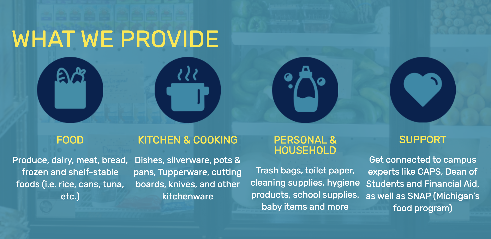

ABOUT US
The Maize and Blue Cupboard is a food pantry who's mission is to ensure members of the University of Michigan's community will have a reliable source of healthy and nutritious food.
WHAT WE PROVIDE
At Maize and Blue, you can find a wide range of items ranging from food food to cooking products to personal goods.
ACCESSING MAIZE AND BLUE
The Maize and Blue Cupboard is appointment only. This means that in order to access the food pantry, you must make an appointment online using the following link here!
GET INVOLVED
There are many ways you can get involved with Maize and Blue and contribute to our mission.
- Volunteering: Anyone can help, no experience is necessary, and you can sign up for a shift that works with your schedule. Find a time slot that works for you here!
- Money: We use monetary donations to purchase discounted food from a community food bank. Any amount can make a huge difference to our community. You can donate here!
- Goods: Consider donating produce, canned and dry goods, cookware and personal care items. To ensure the health and safety of students are met, we only accept items that comply with federal, state, and local food safety regulations.
Donation Tips:
-Fresh produce should be whole, with no signs of mold, spoilage or severe bruising.
-Canned and dry goods should be unopened and in their original packaging, have an intact label with ingredients and allergens, and be in good condition (no dents, bulging, or rust).
-We are unable to accept expired items.
LOCATION
Located in the basement of the Betsy Barbour Residence Hall, please enter via the Maynard entrance only to ensure privacy for residents. Please contact us if you need ramp or elevator access.
Address: 420 S State St Ann Arbor, MI 48109
HOURS
Hours of Operation:
Sunday: 2pm-6pm
Monday - Thursday: 3pm-7pm
Friday: 12pm-7pm
Saturday: closed